Mathematics¶

Complex Analysis¶
Some useful concepts: [1]
- Representation of a complex number and its conjugate
- Complex functions
- curves, closed curves, simple curves
- Ininity point
- Analytic functions: depends only on z not its complex conjugate
- Entire function: single-valued analytic all over C
- Liouville theorem
- Pole
- Singularity, Essential Singularity
- Meromorphic function
For multi-valued functions,
- A branch of a function
- Analyticity of multi-valued function
- Branch point
- Cut
Operations
- Contour integral of a continuous function arround some simple curve
- Cauchy’s Integral Theorem
 is a function of a complex variable 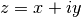.
is a function of a complex variable 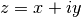.
Singularities¶
There are 3 common singularities,
- Pole
- Branch point
- Essential singularity
Pole is very useful since it’s related to the Residue Theorem. Thus one of the task in physics is to calculate the residue of a function.
The residue at a simple pole is given by
Meanwhile, the residue at a pole of nth order is
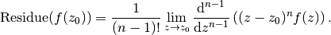
Branch points are points when we go around it in circles the values of our function would change. Examples of such points are  for
for  and
and  for 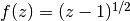.
for 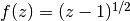.
Calculus¶

LaTeX source of this image is here .
Differential of Functions¶
Integrals¶
Sometimes a integral on Real plane can be very hard, one of the techniques is to work on Complex plane and use contour integral.
Contours: use Ghost Contours so that we don’t need to calculate these complicated integrals.
Branch Cut: cuts are needed if we have got branch points on the complex plane.
Residue Theorem: we can write down the integral by calculating the residue of the integrand,

where
 are the poles.
are the poles.
Linear Algebra¶
Tensor Product Space¶
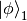 and  are elements of Hilbert space
are elements of Hilbert space  and
and  . Tensor Product of and is denoted as
. Tensor Product of and is denoted as  . This operation is linear and distributive.
. This operation is linear and distributive.
Tensor product space 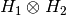 is composed of all the linear combinations of all possible tensor products of elements in and .

Operators Applied to Tensor Product¶
Two operators  and
and  works on and respectively applied to tensor product
works on and respectively applied to tensor product

Solving Linear Equations¶
First of all, write down the augmented matrix for the equation set.
Elementary row operations are allowed on the augmented matrix. Operate on the matrix until one can read out the solutions.
Differential Geometry¶
Metric¶
Definitions¶
Denote the basis in use as  , then the metric can be written as
, then the metric can be written as
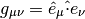
if the basis satisfies
Inversed metric
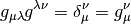
How to calculate the metric¶
Let’s check the definition of metric again.
If we choose a basis , then a vector (at one certain point) in this coordinate system is
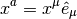
Then we can construct the expression of metric of this point under this coordinate system,

For example, in spherical coordinate system,
(1)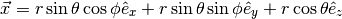
Now we have to find the basis under spherical coordinate system. Assume the basis is  . Choose some scale factors
. Choose some scale factors  . Then the basis is
. Then the basis is
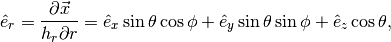
etc. Then collect the terms in formula (1) is we get  , this is incomplete. So we check the derivative.
, this is incomplete. So we check the derivative.
![\mathrm d\vec x = \hat e_x (\mathrm dr \sin\theta\cos\phi+r\cos\theta\cos\phi\mathrm d\theta-r\sin\theta\sin\phi\mathrm d\phi)
\hat e_y (\mathrm dr\sin\theta\sin\phi+r\cos\theta\sin\phi\mathrm d\theta+r\sin\theta\cos\phi\mathrm d\phi)
\hat e_z (\mathrm dr\cos\theta-r\sin\theta\mathrm d\theta)
= \mathrm dr(\hat e_x\sin\theta\cos\phi +\hat e_y \sin\theta\sin\phi -\hat e_z \cos\theta)
\mathrm d\theta (\hat e_x\cos\theta\cos\phi +\hat e_y \cos\theta\sin\phi - \hat e_z \sin\theta)r
\mathrm d\phi (-\hat e_x\sin\phi +\hat e_y \cos\phi)r\sin\theta
=\hat e_r\mathrm dr+\hat e_\theta r\mathrm d\theta +\hat e_\phi r\sin\theta\mathrm d \phi](_images/math/358683c9f92e47ec1d0b93bbf0349ad3758743d2.png)
Once we reach here, the component (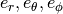) of the point under the spherical coordinates system basis () at this point are clear, i.e.,

In this way, the metric tensor for spherical coordinates is

Connection¶
First class connection can be calculated
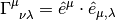
Second class connection isfootnote{Kevin E. Cahill}
![[\mu\nu,\iota]=g_{\iota\mu}\Gamma^\mu_{\phantom{\mu}\nu\lambda}](_images/math/391432bd50309fbeecfee991c63b9e21ad35b0db.png)
Gradient, Curl, Divergence, etc¶
Gradient¶


Divergence¶

For an anti-symmetric tensor

Annotation Using the relation 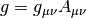, 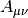 is the algebraic complement, we can prove the following two equalities.

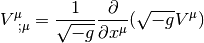
In some simple case, all the three kind of operation can be demonstrated by different applications of the del operator, which .
- Gradient,
 , in which
, in which  is a scalar.
is a scalar. - Divergence, 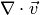
- Curl,

- Laplacian,

Linear Algebra¶


 is the adjugate matrix of
is the adjugate matrix of  .
.Refs & Notes¶
| [1] | A handout note by Finly |
{kind=link}